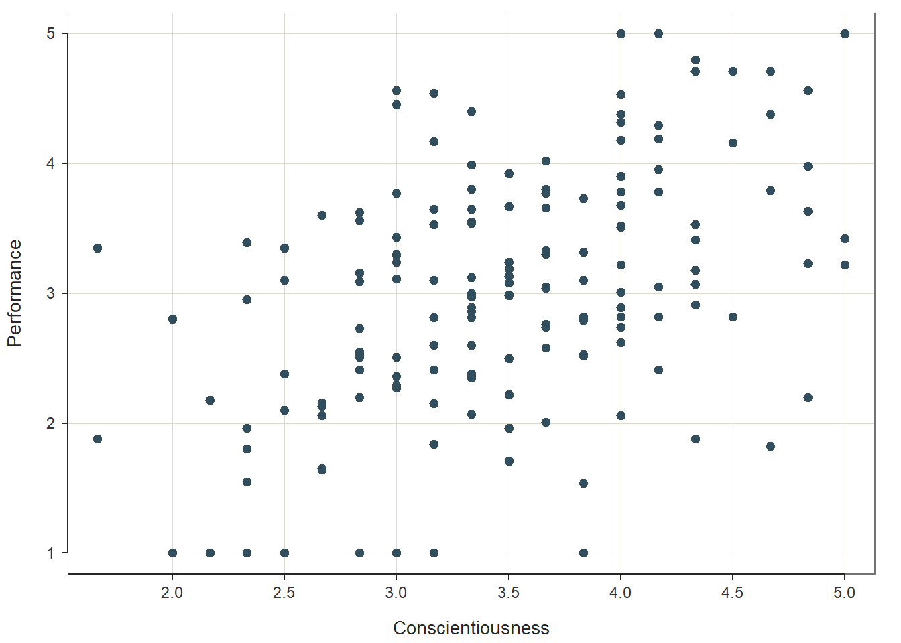
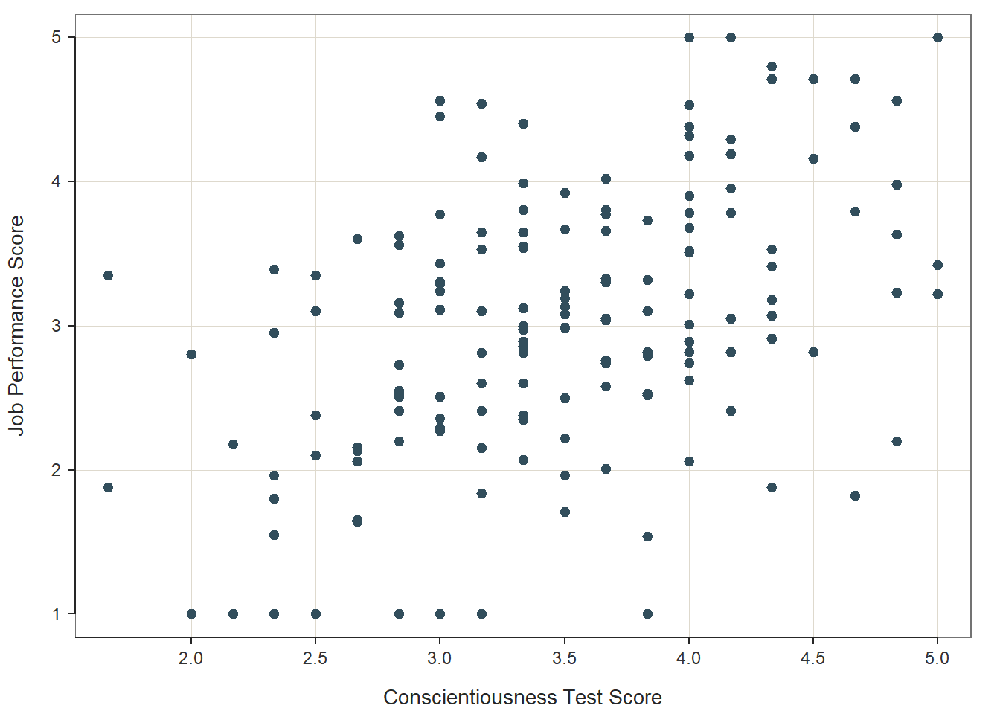
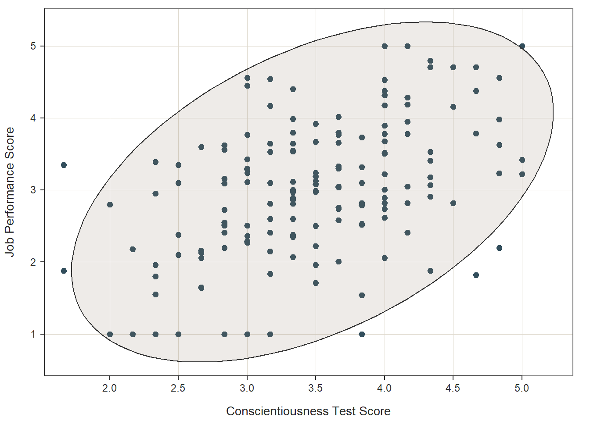

Chapter 35 Estimating Criterion-Related Validity Using Correlation
In this chapter, we will learn how to estimate the criterion-related validity of an employee selection tool by using a correlation. We’ll begin with a conceptual overview of criterion-related validity and correlation, and we’ll conclude with a tutorial.
35.1 Conceptual Overview
In this section, we’ll begin by reviewing the concept of criterion-related validity and then conclude by reviewing the Pearson product-moment correlation. With respect to the latter, we’ll discuss the statistical assumptions that should be satisfied prior to estimating and interpreting a correlation as well as statistical significance and and practical significance in the context of correlation. The section will wrap up with a sample-write up of a correlation when used to estimate the criterion-related validity of a selection tool.
35.1.1 Review of Criterion-Related Validity
Criterion-related validity (criterion validity) has to do with the association between a variable and some outcome variable. The term criterion can be thought of as some outcome or correlate of practical or theoretical interest. In the employee selection context, the criterion of interest is often some indicator of job performance (e.g., performance evaluations). Where possible, the U.S. court system generally favors evidence of criterion-related validity when demonstrating that a selection tool is job-relevant and job-related. The data necessary to estimate criterion-related validity can be acquired from concurrent validation studies/designs or predictive validation studies/designs, both of which can be classified beneath the umbrella term of criterion-related validation studies/designs. For additional information on criterion-related validity and other types of validity (e.g., content, construct, convergent, discriminant), I recommend reading the following free resources:
- Pages 10-15 from the Principles for the Validiation and Use of Personnel Selection Procedures (Society for Industrial & Organizational Psychology 2018);
- Chapter 4.2 from Research Methods in Psychology (Price et al. 2017).
35.1.2 Review of Correlation
A correlation represents the sign (i.e., direction) and magnitude (i.e., strength) of an association between two variables. There are different types of correlations we can estimate, and their appropriateness will depend on the measurement scales of the two variables. For instance, the Pearson product-moment correlation is used when both variables are continuous (i.e., have interval or ratio measurement scale), whereas the biserial correlation is used when one variable is continuous and the other is dichotomous (e.g., has a nominal measurement scale with just two levels or categories). In this chapter, we will focus on estimating Pearson product-moment correlations, which I will henceforth refer to as just “correlation.”
Correlation coefficients can range from -1.00 to +1.00, where zero (.00) represents no association, -1.00 represents a perfect negative (inverse) association, and +1.00 represents a perfect positive association. A Pearson product-moment correlation coefficient (r) for a sample can be computed using the following formula:
\(r = \frac{\sum XY - \frac{(\sum X)(\sum Y)}{n}} {\sqrt{(\sum X^{2} - \frac{\sum X^{2}}{n}) (\sum Y^{2} - \frac{\sum Y^{2}}{n})}}\)
where \(X\) refers to scores from one variable and \(Y\) refers to scores from the other variable, \(n\) refers to the sample size (i.e., the number of pairs of data corresponding to the number of cases – with complete data).
When estimated using data acquired from a criterion-related validation study (e.g, concurrent or predictive validation study/design), a correlation coefficient can be referred to as a validity coefficient.
35.1.2.1 Statistical Assumptions
The statistical assumptions that should be met prior to running and/or interpreting a Pearson product-moment correlation include:
- Cases are randomly sampled from the population, such that the variable scores for one individual are independent of the variable scores of another individual;
- Each variable shows a univariate normal distribution;
- Each variable is free of univariate outliers, and together the variables are free of bivariate outliers;
- Variables demonstrate a bivariate normal distribution - meaning, each variable is normally distributed at each level/value of the other variable. Often, this roughly takes the form of an ellipse shape, if you were to superimpose an oval that would fit around most cases in a bivariate scatter plot;
- The association between the two variables is linear.
35.1.2.2 Statistical Significance
The significance level of a correlation coefficient is determined by the sample size and the magnitude of the correlation coefficient. Specifically, a t-statistic with N-2 degrees of freedom (df) is calculated and compared to a Student’s t-distribution with N-2 df and a given alpha level (usually two-tailed, alpha = .05). If the calculated t-statistic is greater in magnitude than the chosen t-distribution, we conclude that the population correlation coefficient is significantly greater than zero. We use the following formula to calculate the t-statistic:
\(t = \frac{r \sqrt{N-2}}{1-r^{2}}\)
where \(r\) refers to the estimated correlation coefficient and \(N\) refers to the sample size. Alternatively, the exact p-value can be computed using a statistical software program like R if we know the df and t-value.
In practice, however, we don’t always report the associated t-value; instead, we almost always report the exact p-value associated with the t-value when reporting information about statistical significance. When using null hypothesis significance testing, we interpret a p-value that is less than our chosen alpha level (which is conventionally .05, two-tailed) to meet the standard for statistical significance. This means that we reject the null hypothesis that the correlation is equal to zero. By rejecting this null hypothesis, we conclude that the correlation is significantly different from zero. If the p-value is equal to or greater than our chosen alpha level (e.g., .05, two-tailed), then we fail to reject the null hypothesis that the correlation is equal to zero; meaning, we conclude that there is no evidence of linear association between the two variables.
35.1.2.3 Practical Significance
The size of a correlation coefficient can be described using qualitative labels, such as small, medium, and large. The quantitative values tied to such qualitative labels of magnitude should really be treated as context specific; with that said, there are some very general rules we can apply when interpreting the magnitude of correlation coefficients, which are presented in the table below (Cohen 1992). Please note that the r values in the table are absolute values, which means, for example, that correlation coefficients of .50 and -.50 would both have the same absolute value and thus would both be considered large.
| r | Description |
|---|---|
| .10 | Small |
| .30 | Medium |
| .50 | Large |
Some people like to also report the coefficient of determination as an indicator of effect size. The coefficient of determination is calculated by squaring the correlation coefficient to create r2. When multiplied by 100, the coefficient of determination (r2) can be interpreted as the percentage of variance/variability shared between the two variables, which is sometimes stated as follows: Variable \(X\) explains \(X\)% of the variance in Variable \(Y\) (or vice versa). Please note that we use the lower-case r in r2 to indicate that we are reporting the variance overlap between only two variables.
Note: Typically, we only interpret the practical significance of an effect if the effect was found to be statistically significant. The logic is that if an effect (e.g., association, difference) is not statistically significant, then we should treat it as no different than zero, and thus it wouldn’t make sense to the interpret the size of something that statistically has no effect.
A bivariate scatter plot comes in handy when visually depicting the direction and strength of an association between two continuous (interval or ratio measurement scale) variables. Further, the scatter plot can be applied to understand whether statistical assumptions related to linearity and a bivariate normal distribution have been met. To create examples of scatter plots based on simulated data, check out this free tool. The tool also does a nice job of depicting the concept of shared variance in the context of correlation (i.e., coefficient of determination) using a Venn diagram.
35.1.2.4 Sample Write-Up
Our organization implemented a concurrent validation study to collect the data necessary to estimate the criterion-related validity of a new structured interview selection tool for customer service representatives. The concurrent validation study included a sample of 67 job incumbents (N = 67) and their scores on the structured interview and on the criterion of job performance. Using a Pearson product-moment correlation, we found a statistically significant, medium-sized correlation between structured interview scores and job performance scores (r = .29, p = .02), such that those who scored higher on the structured interview showed moderately higher levels of job performance. The 95% confidence interval indicated that the true correlation value for the entire population of employees likely falls somewhere between .05 and .50 (95% CI[.05, .50]). In this context, the correlation coefficient can be conceptualized as a validity coefficient and, thus, an indicator of criterion-related validity. Given that the correlation is statistically significant, we can conclude that the structured interview shows evidence of criterion-related validity for the customer service representative job, thereby demonstrating that this selection tool is job-related.
Note: If the p-value were equal to or greater than our alpha level (e.g., .05, two-tailed), then we would typically state that the association between the two variables is not statistically significant, and we would not proceed forward with interpreting the effect size (i.e., level of practical significance) because the test of statistical significance indicates that it is very unlikely based on our sample that a true association between these two variables exists in the population.
35.2 Tutorial
This chapter’s tutorial demonstrates how to estimate criterion-related validity using a correlation, and how to present the results in writing.
35.2.1 Video Tutorial
As usual, you have the choice to follow along with the written tutorial in this chapter or to watch the video tutorial below.
Link to video tutorial: https://youtu.be/yPAfqmISQ3U
35.2.2 Functions & Packages Introduced
| Function | Package |
|---|---|
ScatterPlot |
lessR |
Correlation |
lessR |
35.2.3 Initial Steps
If you haven’t already, save the file called “SelectionData.csv” into a folder that you will subsequently set as your working directory. Your working directory will likely be different than the one shown below (i.e., "H:/RWorkshop"). As a reminder, you can access all of the data files referenced in this book by downloading them as a compressed (zipped) folder from the my GitHub site: https://github.com/davidcaughlin/R-Tutorial-Data-Files; once you’ve followed the link to GitHub, just click “Code” (or “Download”) followed by “Download ZIP”, which will download all of the data files referenced in this book. For the sake of parsimony, I recommend downloading all of the data files into the same folder on your computer, which will allow you to set that same folder as your working directory for each of the chapters in this book.
Next, using the setwd function, set your working directory to the folder in which you saved the data file for this chapter. Alternatively, you can manually set your working directory folder in your drop-down menus by going to Session > Set Working Directory > Choose Directory…. Be sure to create a new R script file (.R) or update an existing R script file so that you can save your script and annotations. If you need refreshers on how to set your working directory and how to create and save an R script, please refer to Setting a Working Directory and Creating & Saving an R Script.
Next, read in the .csv data file called “SelectionData.csv” using your choice of read function. In this example, I use the read_csv function from the readr package (Wickham and Hester 2020). If you choose to use the read_csv function, be sure that you have installed and accessed the readr package using the install.packages and library functions. Note: You don’t need to install a package every time you wish to access it; in general, I would recommend updating a package installation once ever 1-3 months. For refreshers on installing packages and reading data into R, please refer to Packages and Reading Data into R.
# Install readr package if you haven't already
# [Note: You don't need to install a package every
# time you wish to access it]
install.packages("readr")# Access readr package
library(readr)
# Read data and name data frame (tibble) object
df <- read_csv("SelectionData.csv")##
## -- Column specification ---------------------------------------------------------------------------------------------
## cols(
## EmployeeID = col_double(),
## Conscientiousness = col_double(),
## Interview = col_double(),
## Performance = col_double()
## )## [1] "EmployeeID" "Conscientiousness" "Interview" "Performance"## spec_tbl_df[,4] [163 x 4] (S3: spec_tbl_df/tbl_df/tbl/data.frame)
## $ EmployeeID : num [1:163] 1 2 3 4 5 6 7 8 9 10 ...
## $ Conscientiousness: num [1:163] 3.33 3.83 3.33 4 3.67 ...
## $ Interview : num [1:163] 3.5 3.61 3.42 4.48 4.82 3.54 3.87 3.54 4.08 5 ...
## $ Performance : num [1:163] 2.35 1.54 3.99 3.78 3.77 3.51 3.65 1.55 2.51 3.63 ...
## - attr(*, "spec")=
## .. cols(
## .. EmployeeID = col_double(),
## .. Conscientiousness = col_double(),
## .. Interview = col_double(),
## .. Performance = col_double()
## .. )## # A tibble: 6 x 4
## EmployeeID Conscientiousness Interview Performance
## <dbl> <dbl> <dbl> <dbl>
## 1 1 3.33 3.5 2.35
## 2 2 3.83 3.61 1.54
## 3 3 3.33 3.42 3.99
## 4 4 4 4.48 3.78
## 5 5 3.67 4.82 3.77
## 6 6 4 3.54 3.51The data frame contains 4 variables and 163 cases (i.e., employees): EmployeeID, Conscientiousness, Interview, and Performance. Let’s assume that these data were collected as part of a concurrent validation study aimed at estimating the criterion-related validity of selection tools (e.g., procedures, assessments, tests); this means that the selection tools (i.e., Conscientiousness, Interview) were administered to job incumbents and the criterion measure (Performance) was administered at about the same time. To begin, EmployeeID is the unique identifier variable. The Conscientiousness variable contains the scores on a personality test designed to “tap into” the psychological concept of conscientiousness; potential scores on this variable could range from 1 (low conscientiousness) to 5 (high conscientiousness). The Interview variable contains the scores for a structured interview designed to assess interviewees’ level customer-service knowledge and skills; potential scores on this variable could range from 1 (poor customer service) to 5 (strong customer service). Finally, the criterion for this concurrent validation study is the Performance variable, which contains the job performance evaluation ratings for the job incumbents; potential scores on this variable could range from 1 (does not meet performance standards) to 5 (exceeds performance standards).
35.2.4 Visualize Association Using a Scatter Plot
Two of the key statistical assumptions that should be satisfied prior to estimating a Pearson product-moment correlation are that (a) the association between the two variables is approximately linear and that (b) a bivariate normal distribution exists between the two variables. A data visualization called a scatter plot can be used to test both of these assumptions.
The ScatterPlot function from the lessR package does a nice job generate generating scatter plots – and it even provides an estimate of the correlation by default. If you haven’t already, install and access the lessR package.
To begin, type the name of the ScatterPlot function. As the first two arguments of the function, type the names of the two variables you wish to visualize; let’s start by visualizing the association between the Conscientiousness selection tool and the criterion (Performance). The variable name that we type after the x= argument will set the x-axis, and the variable name that we type after the y= argument will set the y-axis. Conventionally, we place the criterion variable on the y-axis, as it is the outcome. As the third argument, use the data= argument to provide the name of the data frame to which the two variables belong (df).
# Create scatter plot using ScatterPlot function from lessR
ScatterPlot(x=Conscientiousness, y=Performance, data=df)
## >>> Suggestions
## Plot(Conscientiousness, Performance, fit="lm", fit_se=c(.90,.99)) # fit line, standard errors
## Plot(Conscientiousness, Performance, out_cut=.10) # label top 10% potential outliers
## Plot(Conscientiousness, Performance, enhance=TRUE) # many options
##
##
## >>> Pearson's product-moment correlation
##
## Number of paired values with neither missing, n = 163
##
##
## Sample Correlation of Conscientiousness and Performance: r = 0.469
##
##
## Hypothesis Test of 0 Correlation: t = 6.732, df = 161, p-value = 0.000
## 95% Confidence Interval for Correlation: 0.339 to 0.581In our plot window, we can see a fairly clear positive linear trend between Conscientiousness and Performance, which provides us with some evidence that the assumption of a linear association has been satisfied. Furthermore, the distribution is ellipse-shaped, which gives us some evidence that the underlying distribution between the two variables is likely bivariate normal – thereby satisfying the second assumption mentioned above. Note that the ScatterPlot function automatically provides an estimate of a (Pearson product-moment) correlation in the output (r = .509), along with the associated p-value (p < .001).
35.2.4.1 Optional: Stylizing the ScatterPlot Function from lessR
If you would like to optionally stylize your scatter plot, we can use the xlab= and ylab= arguments to change the default names of the x-axis and y-axis, respectively.
# Optional: Styling the scatter plot
ScatterPlot(x=Conscientiousness, y=Performance, data=df,
xlab="Conscientiousness Test Score",
ylab="Job Performance Score")
## >>> Suggestions
## Plot(Conscientiousness, Performance, fit="lm", fit_se=c(.90,.99)) # fit line, standard errors
## Plot(Conscientiousness, Performance, out_cut=.10) # label top 10% potential outliers
## Plot(Conscientiousness, Performance, enhance=TRUE) # many options
##
##
## >>> Pearson's product-moment correlation
##
## Number of paired values with neither missing, n = 163
##
##
## Sample Correlation of Conscientiousness and Performance: r = 0.469
##
##
## Hypothesis Test of 0 Correlation: t = 6.732, df = 161, p-value = 0.000
## 95% Confidence Interval for Correlation: 0.339 to 0.581We can also superimpose an ellipse by adding the argument ellipse=TRUE, which can visually aid our judgument on whether the distribution is bivariate normal.
# Scatterplot using ScatterPlot function from lessR
ScatterPlot(x=Conscientiousness, y=Performance, data=df,
xlab="Conscientiousness Test Score",
ylab="Job Performance Score",
ellipse=TRUE)## [Ellipse with Murdoch and Chow's function ellipse from their ellipse package]
## >>> Suggestions
## Plot(Conscientiousness, Performance, fit="lm", fit_se=c(.90,.99)) # fit line, standard errors
## Plot(Conscientiousness, Performance, out_cut=.10) # label top 10% potential outliers
## Plot(Conscientiousness, Performance, enhance=TRUE) # many options
##
##
## >>> Pearson's product-moment correlation
##
## Number of paired values with neither missing, n = 163
##
##
## Sample Correlation of Conscientiousness and Performance: r = 0.469
##
##
## Hypothesis Test of 0 Correlation: t = 6.732, df = 161, p-value = 0.000
## 95% Confidence Interval for Correlation: 0.339 to 0.58135.2.5 Estimate Correlation
Important note: For space considerations, we will assume that the variables we wish to correlate have met the necessary statistical assumptions (see Statistical Assumptions section). For instance, we will assume that employees in this sample were randomly drawn from the underlying population of employees, that there is evidence of univariate and bivariate normal distributions for the variables in question, that the data are free of outliers, and that the association between variables is linear. To learn how to create a histogram or VBS plot (violin-box-scatter plot) to estimate the shape of the univariate distribution for each variable and to flag any potential univariate outliers, which can be used to assess the assumptions of univariate normal distribution and absence of univariate outliers, check out the chapter called Descriptive Statistics.
There are different functions we could use to estimate a Pearson product-moment correlation between two variables (or a biserial correlation). In this chapter, I will demonstrate how to use the Correlation function from the lessR package.
If you haven’t already, install and access the lessR package using the install.packages and library functions, respectively (see above).
To begin, type the name of the Correlation function from the lessR package. As the first two arguments of the function, type the names of the two variables you wish to visualize; let’s start by visualizing the association between the Conscientiousness selection tool and the criterion (Performance). Conventionally, the variable name that appears after the x= argument is our predictor (e.g., selection tool), and the variable name that appears after the y= argument is our criterion (e.g., job performance). As the third argument, use the data= argument to provide the name of the data frame to which the two variables belong (df).
# Estimate correlation using Correlation function from lessR
Correlation(x=Conscientiousness, y=Performance, data=df)## Correlation Analysis for Variables and Performance
## ---------------------------------------------------
## >>> Pearson's product-moment correlation
##
## Number of paired values with neither missing, n = 163
## Number of cases (rows of data) deleted: 0
##
##
## Sample Covariance: s = 0.324
##
## Sample Correlation: r = 0.469
##
##
## Hypothesis Test of 0 Correlation: t = 6.732, df = 161, p-value = 0.000
## 95% Confidence Interval for Correlation: 0.339 to 0.581As you can see, we find the following: r = .469, p < .001, 95% CI[.339, .581]. We can interpret the finding as follows: Scores on the conscientiousness test are positively associated with job performance scores to a statistically significant extent (r = .469, p < .001, 95% CI[.339, .581]), such that individuals with higher conscientiousness tend to have higher job performance. How do we know the correlation coefficient is statistically significant? Well, the p-value is less than the conventional alpha cutoff of .05. Given the conventional rules of thumb for interpreting a correlation coefficient as an effect size (see Practical Significance section), we can describe this correlation coefficient of .469 as approximately medium or medium-to-large in magnitude. The point estimate of the correlation coefficient (r = .469) does not directly reflect the sampling error that inevitably affects the estimated correlation coefficient derived from our sample; this is where the confidence interval can augment our interpretation by expressing a range, within which we can be reasonably confident that the true (population) correlation coefficient likely falls. With regard to the 95% confidence interval, it is likely that the range from .339 to .581 contains the true (population) correlation; that is, the true (population) correlation coefficient is likely somewhere between medium and large in magnitude.
In the context of selection tool validation, the correlation coefficient between a selection tool and a criterion can be used as an indicator of criterion-related validity. Because the correlation above is statistically significant, this provides initial evidence that the conscientiousness test has sufficiently high criterion-related validity, as it appears to be significantly associated with the criterion of job performance. In this context, we can refer to the correlation coefficient as a validity coefficient. Moreover, the practical significance (as indicated by the effect size) is approximately medium or medium-to-large, given the thresholds mentioned above. Thus, as a selection tool, the conscientiousness test appears to have relatively good criterion-related validity for this population.
35.2.6 Summary
In this chapter, we learned how to create a scatter plot using the ScatterPlot function from the lessR package, and how to estimate a correlation using the Correlation function from the lessR package.
35.3 Chapter Supplement
In addition to the Correlation function from the lessR package covered above, we can use the cor and cor.test functions from base R to estimate a correlation. Because this function comes from base R, we do not need to install and access an additional package.
35.3.1 Functions & Packages Introduced
| Function | Package |
|---|---|
cor |
base R |
cor.test |
base R |
35.3.2 Initial Steps
If required, please refer to the Initial Steps section from this chapter for more information on these initial steps.
# Install readr package if you haven't already
# [Note: You don't need to install a package every
# time you wish to access it]
install.packages("readr")# Access readr package
library(readr)
# Read data and name data frame (tibble) object
df <- read_csv("SelectionData.csv")##
## -- Column specification ---------------------------------------------------------------------------------------------
## cols(
## EmployeeID = col_double(),
## Conscientiousness = col_double(),
## Interview = col_double(),
## Performance = col_double()
## )## [1] "EmployeeID" "Conscientiousness" "Interview" "Performance"## spec_tbl_df[,4] [163 x 4] (S3: spec_tbl_df/tbl_df/tbl/data.frame)
## $ EmployeeID : num [1:163] 1 2 3 4 5 6 7 8 9 10 ...
## $ Conscientiousness: num [1:163] 3.33 3.83 3.33 4 3.67 ...
## $ Interview : num [1:163] 3.5 3.61 3.42 4.48 4.82 3.54 3.87 3.54 4.08 5 ...
## $ Performance : num [1:163] 2.35 1.54 3.99 3.78 3.77 3.51 3.65 1.55 2.51 3.63 ...
## - attr(*, "spec")=
## .. cols(
## .. EmployeeID = col_double(),
## .. Conscientiousness = col_double(),
## .. Interview = col_double(),
## .. Performance = col_double()
## .. )## # A tibble: 6 x 4
## EmployeeID Conscientiousness Interview Performance
## <dbl> <dbl> <dbl> <dbl>
## 1 1 3.33 3.5 2.35
## 2 2 3.83 3.61 1.54
## 3 3 3.33 3.42 3.99
## 4 4 4 4.48 3.78
## 5 5 3.67 4.82 3.77
## 6 6 4 3.54 3.5135.3.3 cor Function from Base R
The cor function from base R is a quick-and-easy approach to estimating a correlation coefficient if you’re only interested in the sign and magnitude (and not the significance level).
To begin, type the name of the cor function. As the first argument, type the name of your data frame (df) followed by the $ symbol and the name of one of your continuous (interval/ratio) variables (Conscientiousness). As the second argument, type the name of your data frame (df) followed by the $ symbol and the name of one of your continuous (interval/ratio) variables (Performance). Finally, as the third argument, specify method="pearson" to estimate a Pearson product-moment correlation. If you were estimating the association between two rank-order variables, you could replace “pearson” with “spearman” to estimate a Spearman correlation.
# Estimate correlation using cor function
cor(df$Conscientiousness, df$Performance, method="pearson")## [1] 0.468666335.3.4 cor.test Function from Base R
To estimate the correlation coefficient and associated p-value (along with the confidence interval), we can use the cor.test function from base R. By default, the alpha level is set to .05 (two-tailed), and thus a 95% confidence interval is used. As another default, the alternative/research hypothesis is that the true (population) correlation is not equal to zero. If wish to use these defaults, which would be most consistent with common practice. We can use the exact same three arguments as we used for the cor function above.
# Estimate correlation using cor.test function
cor.test(df$Conscientiousness, df$Performance, method="pearson")##
## Pearson's product-moment correlation
##
## data: df$Conscientiousness and df$Performance
## t = 6.7318, df = 161, p-value = 0.0000000002801
## alternative hypothesis: true correlation is not equal to 0
## 95 percent confidence interval:
## 0.3393973 0.5805611
## sample estimates:
## cor
## 0.4686663If we know that we have missing values (i.e., missing data) on at least one of the variables used to estimate the correlation, we can add the na.action=na.omit argument, which excludes cases with missing values on one or both of the variables. We don’t have any missing values in this data frame, so the estimate remains the same.
# Estimate correlation using cor.test function
cor.test(df$Conscientiousness, df$Performance, method="pearson", na.action=na.omit)##
## Pearson's product-moment correlation
##
## data: df$Conscientiousness and df$Performance
## t = 6.7318, df = 161, p-value = 0.0000000002801
## alternative hypothesis: true correlation is not equal to 0
## 95 percent confidence interval:
## 0.3393973 0.5805611
## sample estimates:
## cor
## 0.4686663